1997 was the year I left my hometown to attend University in Lyon (France). The center of the Magic world was an immense store located close to Metro Saxe-Gambetta.
It has since closed down but at that time, "Le Temple du Jeu" was Lyon's MTG central. On the lower level people played computer games(this is where I saw Ultima Online for the first time). On the upper level, it was all MTG trading and playtesting. I saw world-class players there, including the not only talented but also very nice Manuel "Poulidor" Bevand.
1997 is also the year Wizards Of The Coast introduced the "Extended" (1.5) format to please people who disliked the block rotation of Type II. There are a few cool videos about it. The most famous is likely Randy Buehler's victory during Pro-Tour 1997 in Chicago while piloting Lauerpotence.
Just like I once did with the Four Seasons for OldSchool, I wanted to build decks representing various archetype of the era. Since I only play with my wife now, I stayed away from stuff we deem boring like Prison and Combo.
I set the date to August 1997 (mainly to avoid Tempest's Cursed Scroll and Wasteland) which means the legal cards were from:
The Dark
Revised
Fallen Empires
Fourth Edition
Chronicles
Renaissance
Ice Age
Homelands
Alliances
Mirage
Visions
Weatherlight
The following cards were banned.
Demonic Tutor,
Balance,
Fastbond,
Regrowth,
Black Vise (the ban that made Necro viable),
Ivory Tower,
Serendib Efreet,
Braingeyser,
Sol Ring,
Hypnotic Specter,
Strip Mine,
Channel,
Kird Ape,
Mana Crypt,
Maze of Ith,
Wheel of Fortune,
Mind Twist, and
Zuran Orb.
Nothing screams 1997 like the Arena League reward cards. I used them extensively and built eight decks.
| 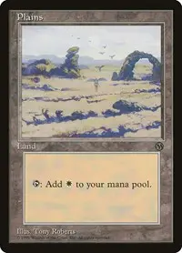 | 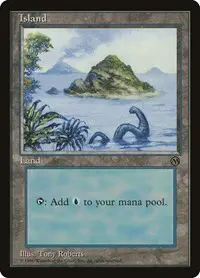 | 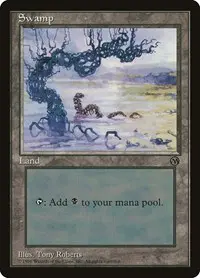 | 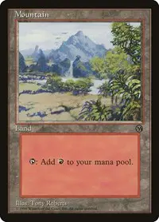 | 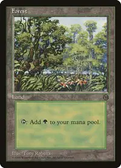 |
| 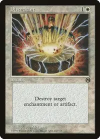 | 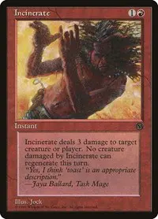 | 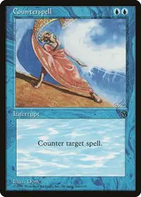 | 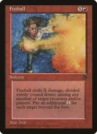 |
The summer of 1996 was named the Black Summer. One year later it was still a very strong deck. This version is an homage to Randy Buehler. A pleasure to be able to Necro for X cards and cast a huge Drain Life. Not having Wasteland in the format allows to use Lake Of the Dead. Not only the card artwork is gorgeous, it is a great synergy with Drain Life.
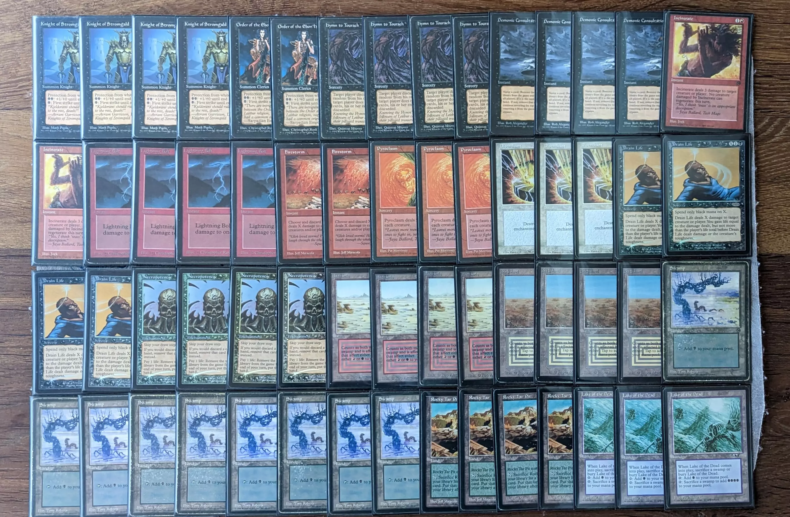Necro decks are so fun that we wanted to be able to play mirrors. Games are short and never boring. A lot of life points are exchanged back and forth with Drain Life.
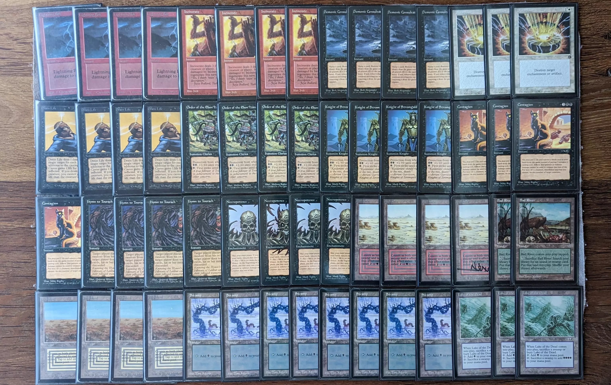Cast a huge creature and destroy all lands. I really wanted to make a like this since I saw this post. I was concerned the Erhnam Djinn were too strong against other decks but it turned out to be something "dealable" with. Really cool to have something that runs both Armageddon and Wrath of God.
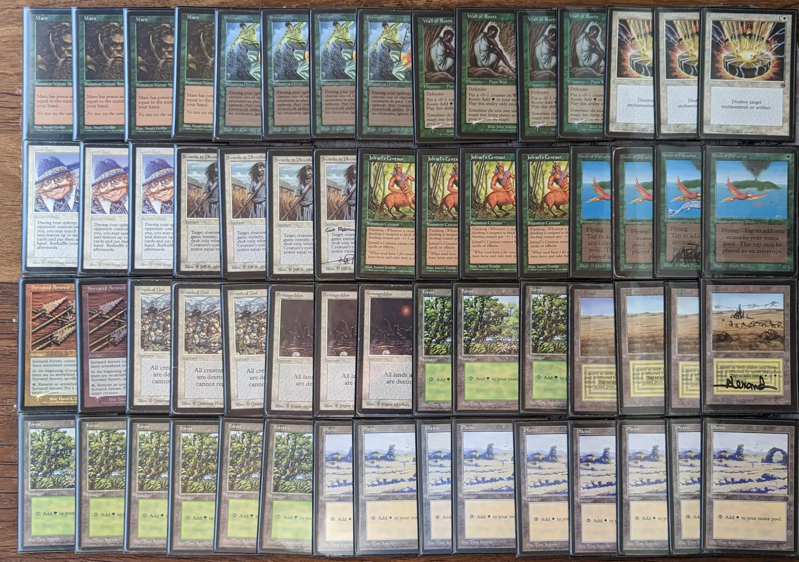A deck that would later better known as Three-Deuce. StormBind is super powerful. It helps the centaur and more importantly the Deadly Insect connect. Grassland-Sylvan Library combo is nice.
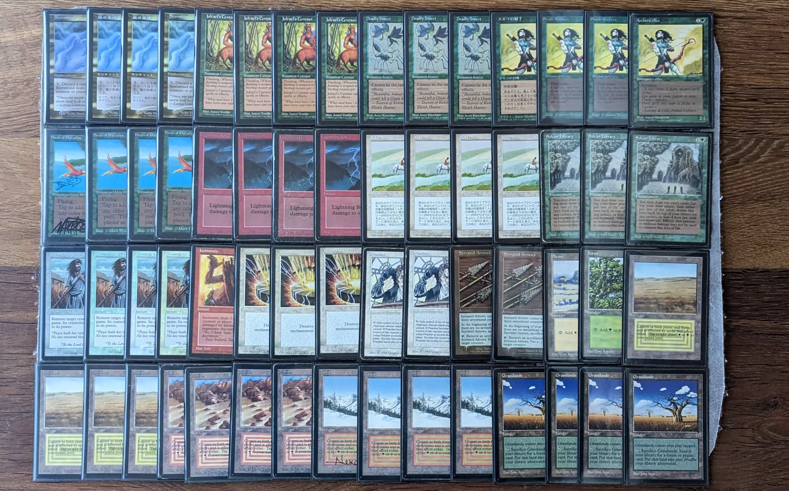I saw many people win tournament at "Le Temple du Jeu" with Sligh. It is super fun and no card is ever dead in your hand. Not sure about the Thundermare, they are not super helpful but unsure what to put instead.
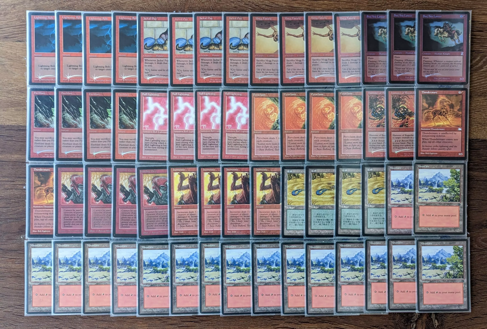EDIT1: After publication, Stephen Hines pointed out that Viashino Sandstalker would be a good alternative to Thundermare.
EDIT2: Jackal Pup and Mogg Fanatic are both in Tempest extension but they make the deck more competitive.
Establish board control and pop Soldiers. Frenetic Efreet seem to be either made of glass or immortal. A little bit boring since it is a Control deck.
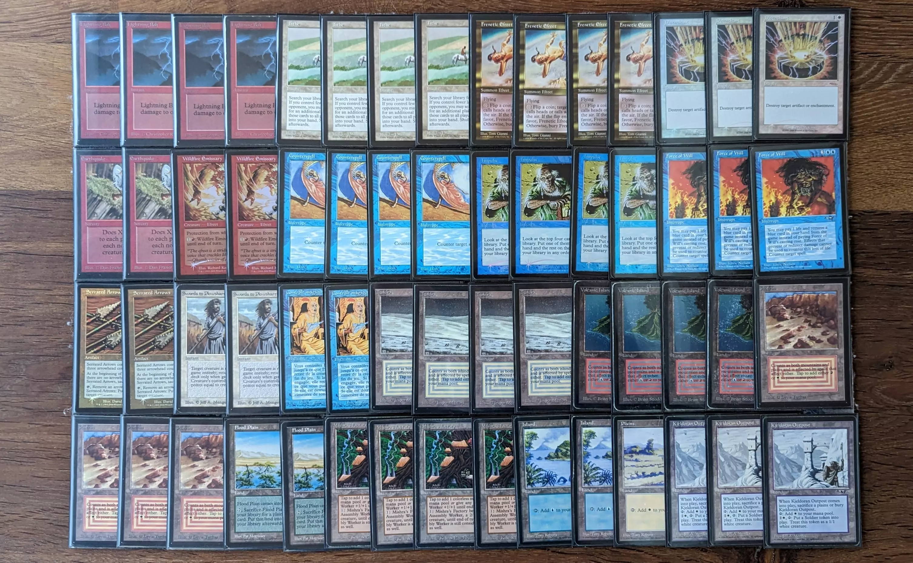Start the Thawing Glaciers draw engine, play a land a turn. I found the process of slowly killing with the Hammer boring so I replaced it with Fireball. A lovely deck if you like to shuffle every turn.
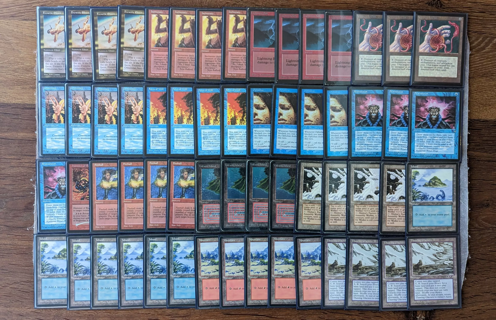In every format it seems White Weenie is able to score victories. Late 90s were no exception. Ultimately, I replaced the Wolves with Sacred Mesa. It is all in Japanese because I thought it would look beautiful. The Arena plains also reminds us of a lovely trip at Arches National Park.
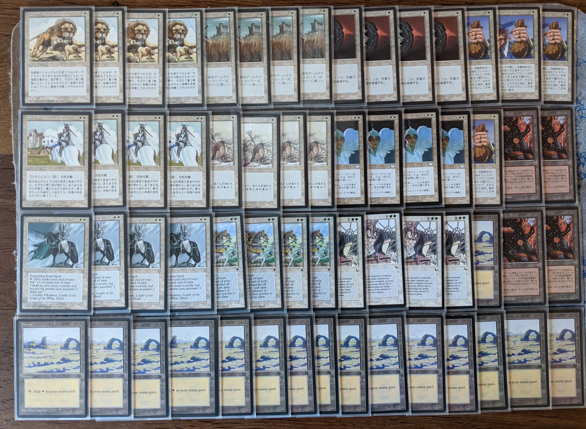